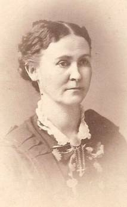
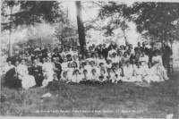
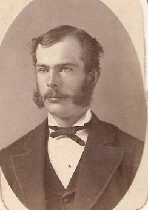

Oxford Past
Oxford, New Haven, Connecticut
Home
Cemeteries
Genealogy
Library
Email
A
|
B
|
C
|
D
|E |F |G |
H
|I |J |K |L |M |
N
|O |
P
|Q |
R
|
S
|
T
|U |V |
W
|X |Y |Z

Sharing old photographs of area residents with others.

Nichols 4th Family Reunion
Thank you to all who have contributed!
Can you help us to identify any of the
people in the following photographs?
Terrell/Treat photo album
Please
email
us if you have family
photographs
that you would
like to contribute to this project.

-A-
Alling, Edwin J.
1834 - 1924
Andrews, Charles Burton
1857 - 1948
Andrews, Joel
1777 - 1865
Andrews, Orintha
1809 - 1885 (
wife of Sherald Brooks
)
Andrus, Jennie Elizabeth
1889 - 1967 (
wife of Atwater C. Treat
)
-B-
Barrett, LeRoy James
1927 - 1987
Bauer, William A.
1892 - 1869 (
with wife Zella)
Bauer, William A., Jr
1916 - 1999 (
with wife Harriet and four daughter
s)
Beach, Zella Ethel
1893 -
(
wife of William Adam Bauer, Sr.
)
Bristol, William B.
1811 - 1900
Bronson, Anne E.
1823 - 1889
Bronson, Miles L.
1823 - 1889
(
with wife Eunice and
a child
)
Bronson, Rodney Oleaned
1846 - 1880
Bronson, Royal L.
1844 - 1863
Brooks, Robert F.
1839 - 1863
Brooks, Sherald
1813 - 1891
Brooks, Sherald A.
1836 - 1862
-C-
Cable, Bessie Minerva
1875 - 1957
(
wife of Sherman Sanford
)
Cable, Frederick Alfred
1877 - 1929
Cable, Hannah Jenette
1838 -
(
wife of G. M. Writer
)
Cable, Nelson Miles
1882 - 1956
Cain, Friend
c. 1840 - 1 Jun 1864
Chandler, George
- (
with wife Nettie
)
Chandler, Nettie
- (
wife of George)
Chatfield, Charles Smith
1836 - 1855
Chatfield, Emily C
. 1833 - 1924 Family (
wife of Lucious Perkins Sperry
)
Chatfield, Enos
1797 - 1869
Chatfield, Enos Beecher
1828 - 1893
Chatfield, Julia
1847 - (
wife of William W. Thompson
)
Curtis, Sarah Amanda
1853 - (
wife of Elijah Burt Treat
)
-D-
Downs, Hiram O.
c. 1848 -
-H-
Hatch, Huldah Elizabeth
1849 - 1930 (
with children Bessie and Fred Cable
)
-L-
Lounsbury, Emma
1845 - 1925
-M
-
McCully, Mary E.
c. 1850
(
wife of Sheldon C. Treat
)
-N
-
Nichols, Isaac
1779 - 1868
Noragong, Betty L.
1932 - 1995
(
wife of LeRoy James Barrett
)
-P-
Perkins, Elizabeth
1799 - 1885 (
with Candee daughters
)
Pope, John B.
1842 - 1915
-R-
Robinson, Rodney G.
1844 - 1931
-S-
Shea, George
1851 -
Shea, Thomas L.
1849 -
Sherman, Charles T.
c. 1854 -
Sherman, Harry B.
c. 1860 -
Sperry, Esther
1780 - 1870
(
wife of Isaac Nichols
)
Sperry, Lucius Perkins
1827 - 1904
Family
Sperry, Roxy
1802 - 1861 (
wife of Enos Chatfield
)
Starkweather, Jessie
1886 - 1985
(
wife of Frank Joseph Tiffany
)
-T-
Terrell, Henry Clark
12 Jul 1834 - 11 Feb 1911
Terrell, Jarvis
Terrell, Mary Catherine
1 Mar 1811 -
Terrell, Rebecca
22 May 1819 -
(
wife of William B. Watson
)
Tiffany, Harriet
1917 - 2003
(
wife of William Adam Bauer, Jr.
)
Tiffany, Robert Starkweather
1920 - 1969
Treat, Atwater
1810 - 1888
Treat, Atwater Curtiss
1883 - 1955
Treat, Elijah Burt
1850 - 1934
Treat, Jennie May
1874 - 1894
Treat, John
29 Aug 1843 -
Treat, Martha J.
27 Mar 1846 -
Treat, Mary A.
25 Apr 1834
Treat, Mary Henrietta
1881 -
Treat, Stephen
1813 -
Treat, Stephen A.
c. 1854 -
Treat, Sheldon
13 May 1838 - Sep 1873
-W-
Warner, Julia Eunice
1813 -
(
wife of Miles L. Bronson
)
Watson, William B.
Home
Cemeteries
Genealogy
Library
Email